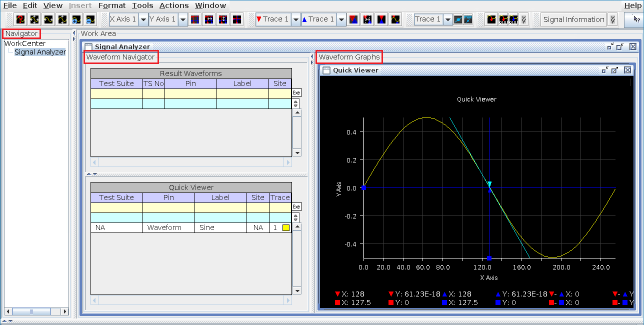

Elements of the Signal Analyzer Tool
The main window of the Signal Analyzer is divided into two sub panels:

- The Waveform Navigator Tool (WNT) displays the list of waveforms stored in the current device file directory.
- The Waveform Graphs Tool (WGT) is used to create, view, download, upload, and analyze waveforms. This tool not only shows setup data, but also result data in a unified manner.
The Navigator allows users to start applications. This window can be collapsed to maximize the size of the other panels.
The functions of the Signal Analyzer are accessed via the menu bar.
The main window of the Signal Analyzer also provides toolbars for viewing and modifying waveforms, setting cursor functions, and setting marker functions in the WGT:
Graph Customization

Hardware Access

Cursor Functions

Marker Functions

Slope Marker Functions

User Defined Functions
Within the toolbar area is the User Defined Panel functions. These functions are programmable using the Data Display API and DSP Test Method API. These functions are independent of the test method program.

For more information on the provided functions see User Defined Panel.
Much of the functionality can also be controlled programmatically using the Data Display API.
Functional changes
- Introduced before SmarTest 6.3.2
- SmarTest 6.5.3: The size of the waveform, which is analyzed using FFT, can be any integer.